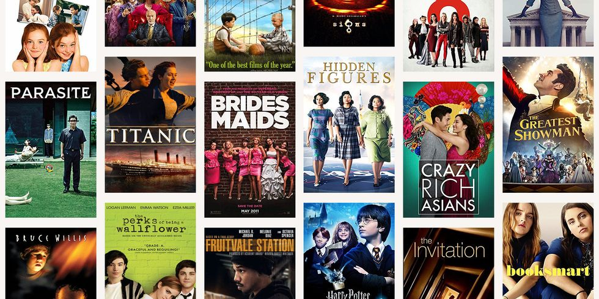
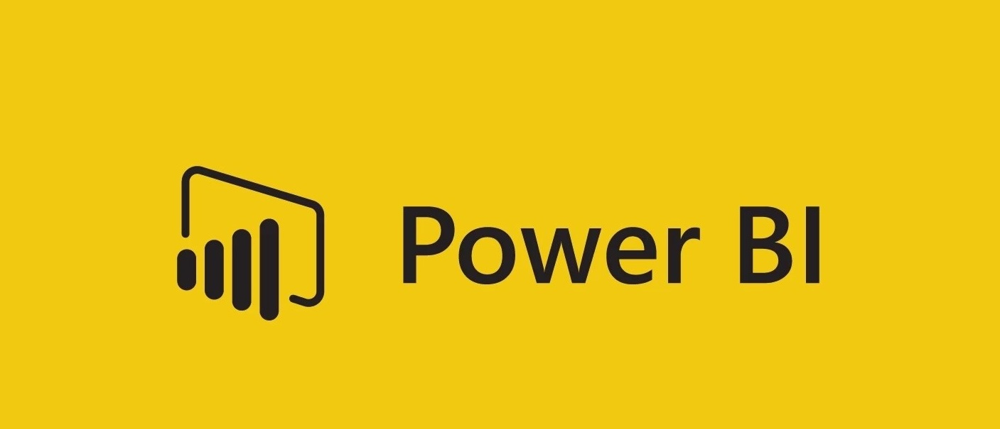
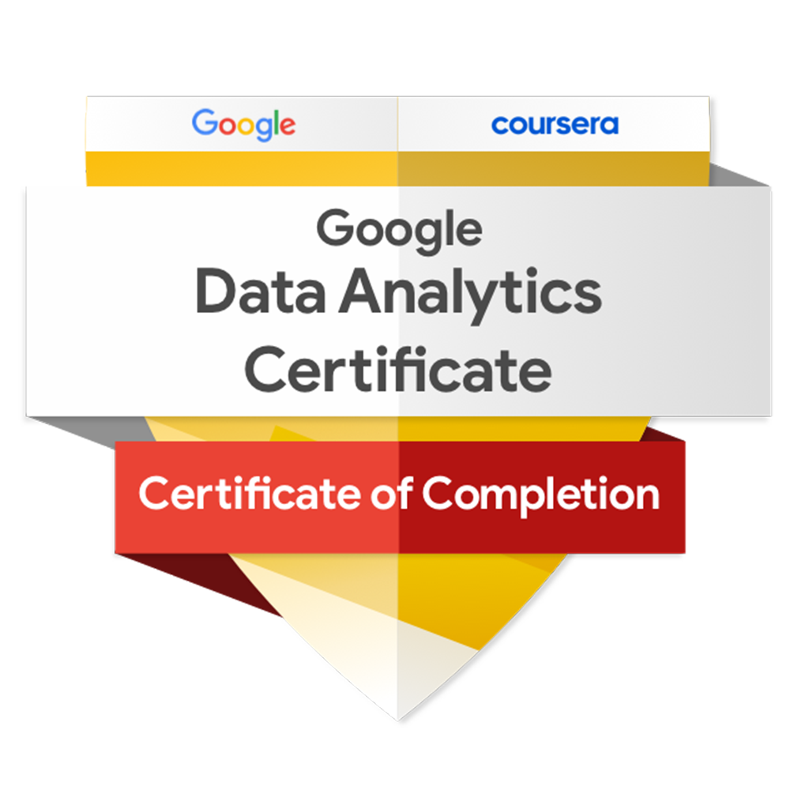

I analyzed a fictional US Regional Sales Data that contains six (6) tables; customer, location, product, region, sales order, and sales team. View how I used SQL, MySQL workbench, Joins, subqueries and stored procedures to answer thirteen (13) business questions on the best-performing sales teams, the profitable products and the most valuable customers.

A project from Udacity Data Analysis Nanodegree; Investigate a dataset. The data set contains information about 10,866 movies collected from The Movie Database (TMDb), including user ratings and revenue. I carried out extensive Data Wrangling and Exploratory Data Analysis on the project.
I analyzed twelve (12) months of trip data set, with over five (5) million rows in total, to better understand how casual riders and members differ and gave recommendations based on my findings.

What properties of the data influence revenue? I carried out a correlation project using Python and R separately to see what drives revenue in the movie industry. I used visuals to explore the relationship between properties in the data set.
I cleaned Nashville Housing Data with over 50,000 rows. I performed the following cleanings: filled in missing data, fixed incorrect data types, split columns and deleted invalid data using SQL and Microsoft SQL Server Management Studio (SSMS) to increase the quality of the data for analysis.
Exploratory Data Analysis project using SQL. I recreated, with SQL, a project done by a popular YouTube channel with Excel. The goal was to dig deep into the game's data by answering 15 business questions using SQL and MySQL workbench.

Data Visualization with Microsoft Power Bi. I distilled large and complex data into simple and concise dashboards.

Completed extensive three months of job-ready Google Professional Data Analytics certificate training. Worked with spreadsheets, SQL, and R to organize and transform data.